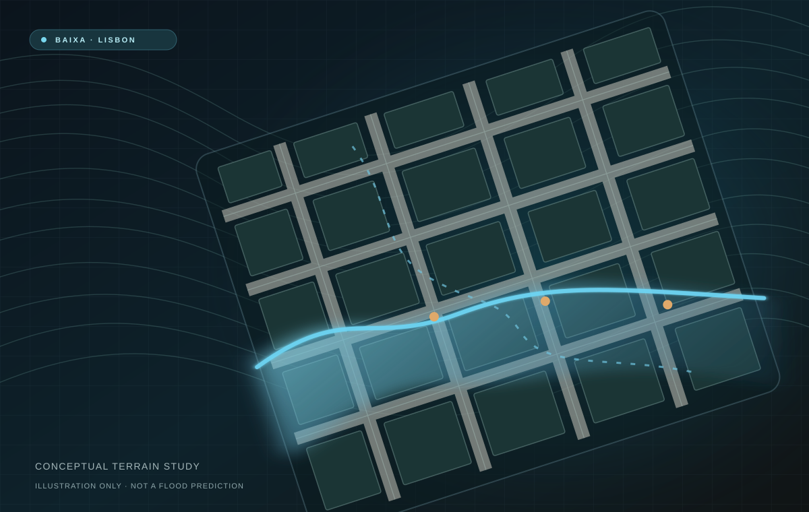

Prepare the spatial layers
Collect and align digital terrain data, building footprints, road segments and land cover information. Examine the resolution, coordinate systems, coverage and reliability of available datasets.
A GIS focused study exploring where intense rainfall may lead to surface water accumulation in Lisbon’s historic centre, which buildings and streets may be exposed, and how 3D visualization could make the findings easier to understand.

Which buildings and street segments in Lisbon’s Baixa district may be most exposed to pluvial flooding?
Baixa sits in the lower part of Lisbon’s historic centre. During periods of intense rainfall, terrain, surface cover and drainage constraints can influence where water accumulates. The project aims to assess potential susceptibility, rather than calculate precisely how deep a flood will be.
The central goal is to use geographic data to identify areas of concern, examine their relationship to the built environment, and eventually communicate the findings in both 2D and 3D.
The workflow is being developed in ArcGIS Pro, with a possible Multi Criteria Evaluation approach. Each stage will be refined as the quality and availability of local data are assessed.
Collect and align digital terrain data, building footprints, road segments and land cover information. Examine the resolution, coordinate systems, coverage and reliability of available datasets.
Derive terrain slope, flow direction and potential flow accumulation from the Digital Terrain Model. Consider impermeable surfaces and evaluate how these factors may be combined into a susceptibility assessment.
Compare susceptibility patterns with building footprints and the street network. The intended outputs include maps and a transparent ranking of locations that may warrant closer investigation.
Explore a 3D scene showing terrain and buildings alongside the analytical results. Unreal Engine is being considered for an interactive visualization, potentially using the ArcGIS Maps SDK.
A conventional 2D GIS map can show where susceptibility is higher or lower. A 3D view may add context by placing this information alongside urban terrain, street geometry and buildings.
I am investigating Unreal Engine with Esri’s ArcGIS Maps SDK as a way to create a geographically situated city scene. ArcGIS Living Atlas could provide supplementary contextual layers where suitable, but it is not itself the Unreal Engine plugin.
This stage is exploratory. Any visualization of water levels would require suitable flood depth data or a separately justified scenario. It would not be presented as a physically accurate flood simulation without hydrological modelling.
Terrain processing, spatial analysis, overlays and cartographic outputs.
Elevation, roads, building footprints and urban surface cover.
Potential weighted assessment of susceptibility indicators, with sensitivity checks.
Possible 3D communication using the ArcGIS Maps SDK for Unreal Engine.
I am evaluating the available terrain and exposure datasets and refining the analysis strategy. The next steps include testing terrain derivatives, selecting and justifying the susceptibility criteria, and investigating how the resulting map can be translated into a meaningful 3D presentation.
The planned approach builds on my 2026 project proposal and published research on GIS based urban flood susceptibility and exposure. These references support the study design; they do not represent results obtained by this project.
Urban flood hazard assessment using GIS and Multi Criteria Decision Analysis.
View study ↗GIS based flood risk scenarios for the historic centre of Lisbon.
View study ↗